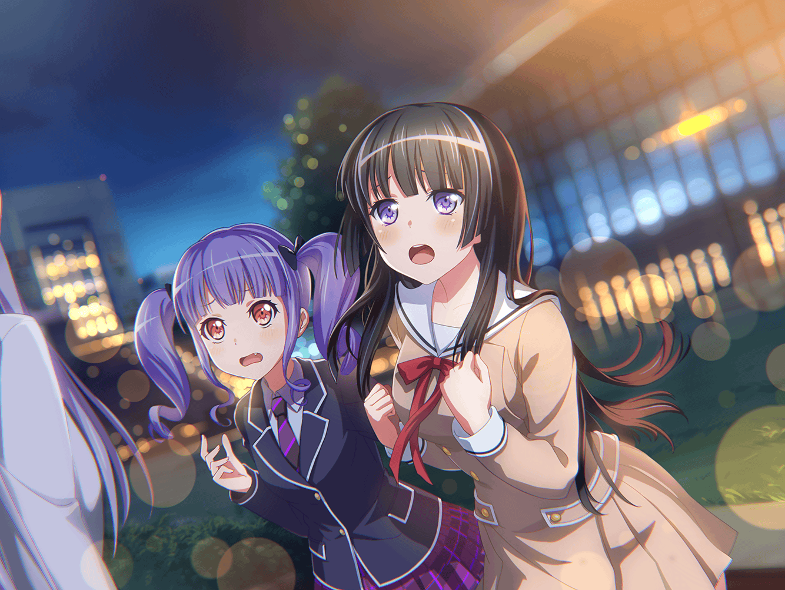

燐子
…………ふぅ
燐子
今のところ……もう少し……
テンポ……上げた方が……いいかな…………
燐子
逆に……サビは……ギターがメインだから……
少し……抑えて…………
友希那
燐子、お疲れさま
燐子
あ……お、お疲れさま……です……
友希那
休憩中にも練習だなんて
熱心なのはいいけれど……少し休んだら？
燐子
えっと…………
燐子
（確かに……ここに来てから……ずっと……
キーボード弾いてたから……少し……疲れたかも……）
燐子
そう……ですね……
友希那
ええ。
このお茶、よかったらどうぞ
燐子
あ……ありがとう……ございます……
友希那
ずいぶん夢中になって練習していたわね
燐子
それは……その……あの時の……
ライブの熱が……抜けてないのかも……しれません……
友希那
あの時のライブ？
燐子
は、はい…………
燐子
この間の……友希那さんの……お父さんの曲を……
演った時の……ライブです……
燐子
あのライブ……本当に楽しくて……
今でも……思い出すことが……あるんです……
燐子
みんな……楽しそうに……演奏してて……
わたしも……楽しくて……
燐子
みんなで……あの曲を演奏できて……
すごく……嬉しかった…………
燐子
ライブが……終わるの……寂しいって……
そう……思えるくらい……楽しかったから……
燐子
あっ……
燐子
す、すみません……
長々と……語ってしまって……
友希那
いいえ、いいの
友希那
燐子とはあまりこういう話をしないから、
あなたの考えることが聞けて嬉しい
友希那
それに……私も同じだもの
燐子
同じ……ですか……？
友希那
ええ。
私もあの時のライブは、今でも胸に残っている
友希那
あの時の感覚は忘れられないわ
燐子
友希那さん…………
燐子
（友希那さんも……同じ気持ち……なんだ……）
燐子
（そういえば……）
燐子
あの……
友希那
何？
燐子
あこちゃんと……一緒に……
あの曲を……歌ってほしいって……
友希那さんに……言いに行ったこと……思い出しました……
燐子
わたし……あの曲を……最初に聴いた時……
衝撃を……受けたんです……
燐子
すごく……カッコよくて……
みんなで……音を……重ねてみたいって……思って……
燐子
でも……友希那さん……あの曲を……
セットリストに……入れるって言わなかったから…………
それに、どこか……様子も……おかしかったから…………
燐子
だから……思い切って……
あこちゃんと……会いに……行ったんです……
友希那
そうだったのね
友希那
あの時の燐子はいつもと違って、
珍しく熱くなっていたから……正直、驚いたわ
燐子
ご、ごめんなさい……
友希那
謝らないで。私は２人に
ああ言ってもらえてよかったと思ってるの
友希那
あの曲を私が歌っていいのか、ずっと悩んでいたから……
友希那
だからあなた達に声を掛けられて、
少し前向きに考えられるようになったわ
燐子
…………
燐子
（わたしの言葉が……想いが……
ちゃんと……友希那さんに……届いていたんだ……！）
燐子
（こんなことを……言ったら……
失礼かも……しれないけど…………）
燐子
友希那さんが前向きな気持ちで歌うことができて……
よかったです……
燐子
それに……その後押しをわたし達ができたのなら……
こんなに、うれしいことはありません……
友希那
燐子……
燐子
また……何か……悩むことが……あれば……
みんなに……相談してくれると……いいなと……思います……
友希那
……ありがとう
友希那
また何か意見を聞くかもしれないけれど、
その時はよろしくね
燐子
は、はい…………